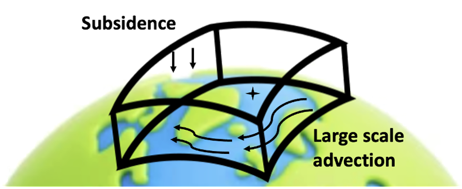
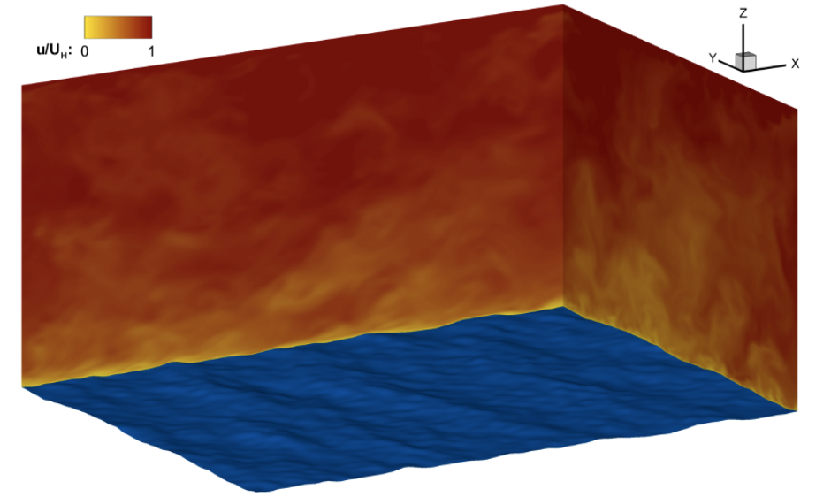
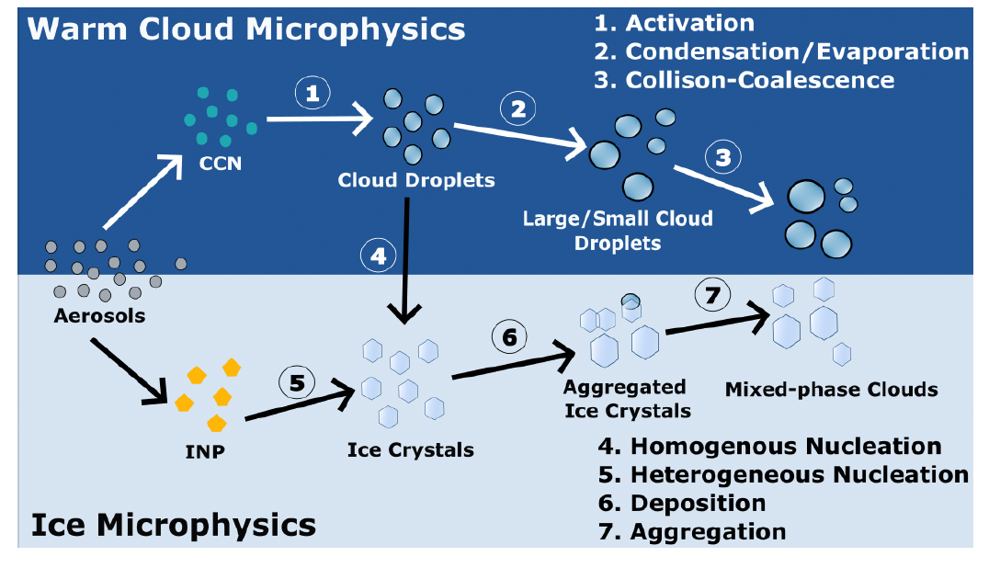
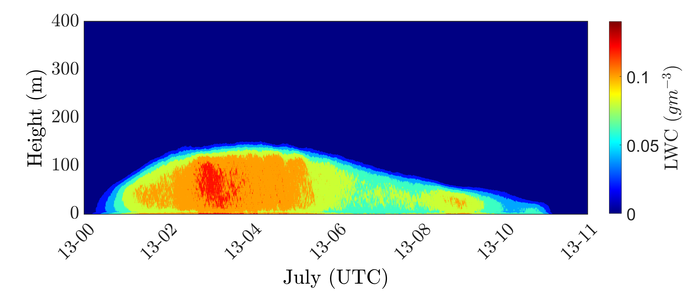
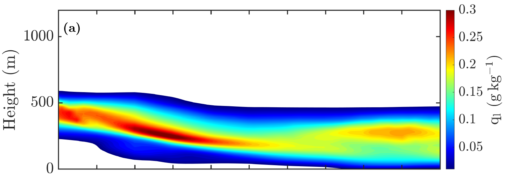
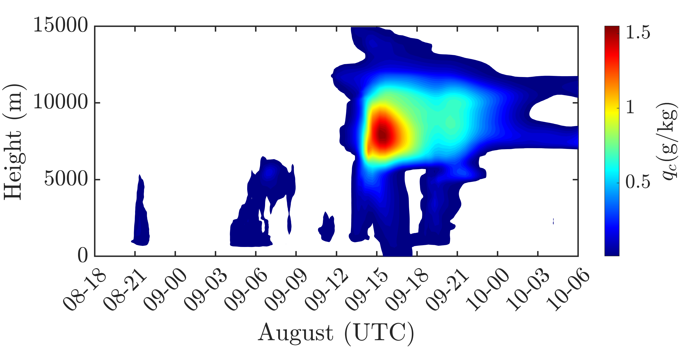
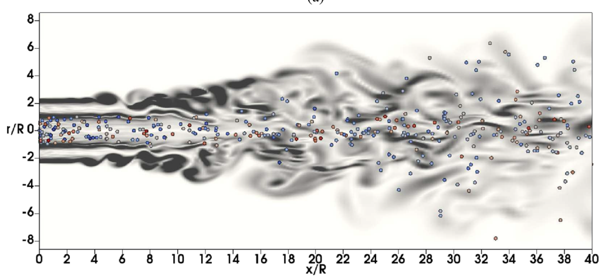

Research
Simulating complex atmospheric phenomena using a multiscale coupling framework
Atmospheric processes such as fog and clouds are among the hardest things to predict in weather forecasting, because they sit at the meeting point of three very different scales: large-scale weather patterns, turbulent mixing in the lowest kilometer of the atmosphere, and the microphysics of individual cloud droplets. No computer is powerful enough to simulate all of these scales together directly. Large-eddy simulation (LES) offers a high-resolution view of boundary-layer turbulence, but on its own it has no knowledge of the larger weather systems driving an event. To bridge this gap, I developed a coupled LES–Large-Scale Dynamics (LES–LSD) framework that feeds realistic, evolving weather conditions into high-resolution simulations. I then extended it with two cloud modeling approaches: a Lagrangian cloud model that tracks individual droplets (the L³ coupling), and a computationally cheaper bulk cloud model (the LLB coupling). Together, these let a single framework capture how real fog and cloud events form, evolve, and dissipate.
(e.g. synoptic / COAMPS map)

Large-scale dynamics
Python-based dynamic downscaling of ERA5 reanalysis and COAMPS forecasts supplies time-varying, regional-scale forcing, so simulated events evolve under realistic campaign-day conditions rather than idealized setups.
(e.g. LES ql / TKE snapshot)

Wall-modeled LES
A high-performance parallel FORTRAN/MPI LES solver resolves the turbulence–radiation–entrainment interplay that governs stratus lowering, fog-top cooling, deep convection, and dissipation in the marine boundary layer.
(e.g. droplet trajectories / Nc field)

Lagrangian & bulk microphysics
Lagrangian computational droplets track activation, condensational growth, coalescence, and precipitation formation along real trajectories, complemented by bulk liquid- and ice-phase schemes for mixed-phase and ice-fog environments.
Applyling the framework to real events
The framework is validated against multi-platform observations — W-band radar, ceilometer and lidar retrievals, surface energy fluxes, and precipitation records — collected during two international field campaigns: FATIMA (Fog and Turbulence Interactions in the Marine Atmosphere) and MAGPIE (Moisture and Aerosol Gradients/Physics of Inversion Evolution). Applications span a stratus-lowering fog event during FATIMA Yellow Sea IOP-5, deep convection over Barbados forced by an African Easterly Wave that operational global models failed to capture, and Arctic ice-fog life cycles at the ARM North Slope of Alaska site.

Marine fog over the Grand Banks
[Placeholder — 2–3 sentences on the campaign and your role: simulation planning, LES of observed fog events, validation against ship and Sable Island observations.]

Stratus-to-fog transitions over the Yellow Sea
[Placeholder — 2–3 sentences on IOP-5 stratus-lowering fog, L³ simulations, and validation against W-band radar and ceilometer observations.]

Deep convection and the trade-wind boundary layer
[Placeholder — 2–3 sentences on African Easterly Wave–forced convection over Barbados and coastal topography effects at Ragged Point.]

Arctic ice-fog life cycles
[Placeholder — 2–3 sentences on bulk ice microphysics implementation and validation against ARM NSA observations.]
Particle-laden coaxial turbulent jets
As a graduate research assistant at IIT Madras, I conducted LES and RANS simulations of particle-laden coaxial turbulent jets using OpenFOAM, investigating turbulence–particle interactions. I developed and modified subgrid-scale turbulence parameterizations (subgrid kinetic energy model) to improve the representation of turbulent mixing in multiphase flow simulations, and applied an Eulerian–Lagrangian framework to study two-way coupling between the carrier phase and dispersed particles. The simulations were validated against experimental benchmarks, followed by parametric studies of particle dispersion and turbulent transport under varying flow conditions. This work resulted in a peer-reviewed publication in Physics of Fluids selected as an Editor's Pick.
(e.g. particle dispersion / jet visualization)

Projects
AI/ML projects
AI/ML surrogates for physics-based simulation with uncertainty quantification
- Developed data-driven surrogate (reduced-order) models to rapidly predict aerodynamic quantities across a continuous parameter space, replacing expensive physics-based simulations.
- Automated simulation workflows using cloud-based APIs and incorporated uncertainty quantification to estimate prediction confidence across the design range.
Joint prediction modeling on QMNIST
- Built a balanced, quality-controlled QMNIST dataset grouped by writer and digit class, with preprocessing, validation, and structured batching for training.
- Designed a multi-path neural architecture with shared embeddings and masking logic to enforce predictive consistency across prediction paths.
- Trained and evaluated with cross-entropy and constraint-based objectives, analyzing performance trends and loss decomposition.
GNN model for NCAA March Madness tournament prediction
- Built an end-to-end Graph Neural Network system in PyTorch Geometric to predict NCAA tournament outcomes from regular-season game graphs spanning 2003–2024 (Kaggle March Machine Learning Mania dataset).
- Engineered four team node feature sets (raw box-score averages, differential metrics, advanced efficiency ratings, and combined) and constructed seasonal undirected game graphs to capture strength-of-schedule and relational team dynamics.
- Trained a two-layer GCN + MLP classifier learning team embeddings, achieving up to 69% validation accuracy and outperforming seed-only baselines in full 2023 bracket simulation.
- Developed a modular, reproducible pipeline: automated graph building, multi-season batching, early-stopping training, and round-by-round bracket simulation.
Daily menu prediction using neural networks
- Designed a data-driven pipeline to classify acceptable daily menus from real-world nutritional and ingredient datasets.
- Performed QA/QC and preprocessing — grouping ingredient variables, validating nutritional fields, and constructing predictor vectors from Breakfast–Lunch–Dinner combinations.
- Engineered target labels based on DRI compliance and upper-quartile meal ratings; trained a PyTorch MLP classifier and visualized results to communicate insights.
CFD & experimental projects
CFD solver development in C++
- Developed an incompressible finite-volume flow solver in C++ and tested it for flow over a flat plate.
- Applied the Semi-Implicit Method for Pressure-Linked Equations (SIMPLE) to solve the Navier–Stokes equations.
- Visualized and analyzed results with Gnuplot and ParaView to understand flow and thermal behavior.
2D Euler solver for supersonic airfoil flow
- Developed a 2D Euler solver to simulate supersonic flow over a diamond-shaped airfoil.
- Designed and implemented a body-fitted grid to accurately represent the airfoil geometry.
- Tested on a 71×48 grid, achieving stable solutions with second-order accuracy and validating flow behavior.
RANS modeling of Poiseuille channel flow
- Developed a k–ε solver for Poiseuille channel flow in MATLAB.
- Modeled wall effects using appropriate wall functions for accurate turbulence representation.
- Validated the solver's performance through comparative analysis with theoretical results.
Effect of number of holes on discharge coefficient in a perforated orifice plate
- Designed and analyzed the effect of varying the number of holes on the coefficient of discharge in pipe flow.
- Used SolidWorks to design the orifice plates and conducted CFD analysis in ANSYS Fluent.
- Experimentally determined the vena contracta location and validated the results.
Publications
Publications
Journal articles
2026
A review of the FATIMA Yellow Sea field campaign research
Quarterly Journal of the Royal Meteorological Society, e70157 ·
doi:10.1002/qj.70157
2025
Large-eddy simulation with Lagrangian cloud modeling and large-scale dynamics (L³) for studying the marine fog life cycle
Quarterly Journal of the Royal Meteorological Society, 151(772), e5022 ·
doi:10.1002/qj.5022
2025
FATIMA-GB: Searching clarity within marine fog
Bulletin of the American Meteorological Society, 106(6), E971–E1016 ·
doi:10.1175/BAMS-D-23-0050.1
2020Editor's Pick
Effect of co-flow velocity ratio on evolution of poly-disperse particles in coaxial turbulent jets: A large-eddy simulation study
Physics of Fluids, 32(9) ·
doi:10.1063/5.0017663
In preparation
Investigating stratus cloud lowering over the Yellow Sea using large-eddy simulation. Weather and Forecasting.
Investigating the impact of African Easterly Waves on the marine atmospheric boundary layer. Boundary-Layer Meteorology.
Large-eddy simulation of ice fog lifecycle over the North Slope of Alaska. Quarterly Journal of the Royal Meteorological Society.
Impact of coastal topography on marine boundary-layer structure and cloud formation at Ragged Point, Barbados. Boundary-Layer Meteorology.
SELECTED CONFERENCE PRESENTATIONS
- Barve, A., et al. (2026). Investigating the effects of the African Easterly Wave on the marine atmospheric boundary layer using large-eddy simulation. 106th AMS Annual Meeting.
- Barve, A., et al. (2026). Investigating the sensitivity of stratus lowering marine fog using large-eddy simulation. 106th AMS Annual Meeting.
- Barve, A., et al. (2025). Bridging scales in marine fog: coupling large-eddy simulation with large-scale dynamics and microphysics. AGU25.
- Barve, A., et al. (2024). Investigation of stratus-fog transitions over Yellow Sea using large-eddy simulation coupled with large-scale dynamics and Lagrangian cloud model. AGU24.
- Barve, A., et al. (2023). Effect of radiative fluxes on the life cycle of marine fog: a large-eddy simulation study. AGU23.
Experience
Experience
Graduate Research Assistant
University of Minnesota — Twin Cities
- Developed a parallel FORTRAN/MPI LES solver with SLURM-based workflow automation for scalable HPC deployment; Lagrangian and bulk (liquid + ice) cloud microphysics.
- Built Python dynamic-downscaling workflows from ERA5 and COAMPS to force cloud-resolving and convection-permitting simulations.
- Participated in the FATIMA and MAGPIE international field campaigns — proposal development, simulation planning, data analysis, and sponsor review meetings.
- Teaching assistant for Thermodynamics, Fluid Mechanics, and Mechanical Measurements Laboratory.
Senior Executive
Siemens Ltd. · Goa, India
- Led development and testing of an electrical switchgear prototype to replace high-GWP SF₆-based systems, collaborating with interdisciplinary global teams.
ASPIRE Development Program
Baker Hughes · Bangalore, India
- Developed machine-learning predictive models for early gas-turbine failure detection, reducing downtime, replacement needs, and associated CO₂ emissions.
Education
Education
Ph.D., Mechanical Engineering
University of Minnesota — Twin Cities · Advisor: Prof. Lian Shen
- Dissertation: exploring cloud and fog processes through multi-scale coupled modeling frameworks.
M.Tech, Mechanical Engineering
Indian Institute of Technology, Madras
- Thesis: numerical study of particle-laden coaxial turbulent jets (LES/RANS in OpenFOAM, Eulerian–Lagrangian two-way coupling, subgrid-scale model development). Published as a Physics of Fluids Editor's Pick.
B.E., Mechanical Engineering
Goa University
Awards & recognition
- Best AOFD Student Poster Presentation — 106th AMS Annual Meeting2026
- Adrian ME Graduate Student Travel Award — University of Minnesota2026
- Charles C. S. Song Fellowship — St. Anthony Falls Laboratory2025
- Ministry of Human Resources & Development Fellowship — IIT Madras2017–2019
- GATE — 99.73 percentile among 200,000 candidates2016
Skills
Methods & tools
Modeling & theory
- Large-eddy simulation (LES)
- Lagrangian & bulk cloud microphysics
- Mesoscale–microscale coupling
- ERA5 reanalysis · COAMPS downscaling
- Finite difference / finite volume methods
- Reduced-order modeling · UQ
Computing
- FORTRAN · Python · C/C++ · MATLAB
- MPI · OpenMP · SLURM · bash
- PyTorch · surrogate modeling · Bayesian optimization
- OpenFOAM · ANSYS Fluent · custom solvers
- Git/GitHub · CMake · Linux
Observations & analysis
- Radar, lidar & surface-flux data analysis
- Model–observation validation
- Field-campaign data (FATIMA, MAGPIE, ARM)
- Statistical methods
- ParaView · Tecplot · Matplotlib/Cartopy